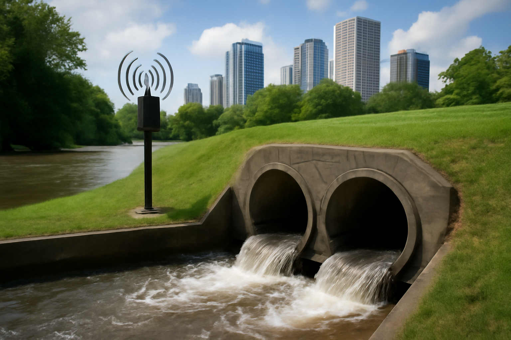

🎯 Objetivo Geral
Desenvolver uma solução tecnológica para monitoramento e previsão de enchentes, reduzindo danos humanos, sociais e ambientais em áreas urbanas.
Instalar sistemas de drenagem eficientes, utilizar sensores para monitoramento e criar alertas rápidos para prevenir danos em áreas vulneráveis.
